I build production-grade agentic AI systems on Google Cloud: LLM apps, RAG pipelines, and the data + MLOps plumbing that keeps them reliable. At Johnson & Johnson (via Pozent) I architected a GCP-native agentic system that cut medical report generation from 2-3 weeks to under a minute.
Activity & impact
Skills
Brightness = depth. core shipped in real work, working used and comfortable, familiar exposure. Click any skill for its evidence.

Watch an agent system work
The shape of the agentic systems I ship: plan, retrieve, synthesize, validate, human review, deliver, with reviewer feedback looping back.

Ask my AI runs in your browser
A tiny RAG system: your question is matched against my knowledge base (BM25 retrieval) and the answer is quoted from it, with sources and a retrieval trace. No server, no guessing: if it isn't in my profile, it says so.
Hi! Ask about my experience, projects or skills.
Job-fit check runs in your browser
Paste a job description. You get matches (shaded by how deep my experience is) and, just as important, the gaps.
What I can build for you
- Agentic AI productsMulti-agent workflows with LangGraph / Google ADK / Claude, tool use and MCP servers, evaluated and human-reviewable.
- RAG & knowledge systemsRetrieval pipelines on BigQuery / Vertex AI that ground LLMs in your real data.
- GCP MLOps & deploymentDocker + Kubernetes (GKE), CI/CD, monitoring - from notebook to production.
- AI backendsFastAPI / Flask services for inference and workflow orchestration.
- Data pipelinesDataflow, Pub/Sub, Dataproc and BigQuery pipelines that make data model-ready.
- Trustworthy AIHITL review, feedback loops, validation - AI people can sign off on.
Let's talk
Abhilash Kurapati · New Jersey, USA